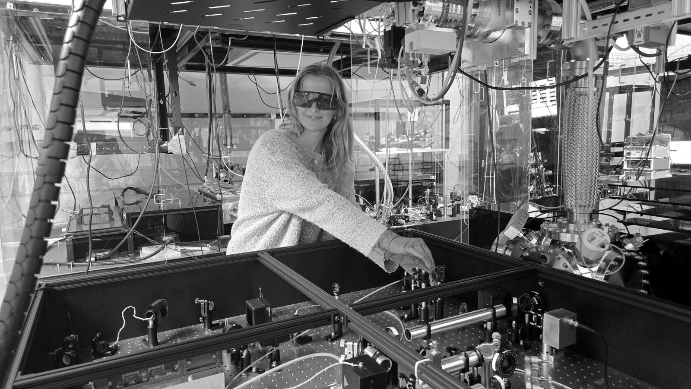

The Physics of Light
Yale Wright Laboratory, August 2026
A course on light, colour and vision, designed and taught for women at the Danbury Federal Correctional Institution through the Yale Prison Education Initiative.

Yale Wright Laboratory, August 2026
A course on light, colour and vision, designed and taught for women at the Danbury Federal Correctional Institution through the Yale Prison Education Initiative.
arXiv:2604.18371, April 2026
Y.-H. Tseng, C. A. Hardy, T. W. Penny, C. Lowe, J. Baeza-Rubio, D. Carney, D. C. Moore
Single krypton, xenon and SF6 molecules caught one at a time by the kick each gives an optically levitated nanoparticle. The measured rates match theory, and the spectrum reads out the particle’s surface properties.

Yale Wright Laboratory, October 2025
A fellowship from the Austrian Marshall Plan Foundation to work with Uroš Delić’s group at TU Wien on loading large arrays of levitated nanoparticles through hollow-core photonic crystal fiber.

Physical Review A 111, 033514, March 2025 · Editors’ Suggestion
B. Siegel, G. Afek, C. Lowe, J. Wang, Y.-H. Tseng, T. W. Penny, D. C. Moore
Defect-free two-dimensional arrays of more than 25 silica microspheres, trapped in vacuum with each sphere’s optical trap controlled on its own and every sphere tracked at once. A step toward arrays of levitated force sensors for dark matter searches.